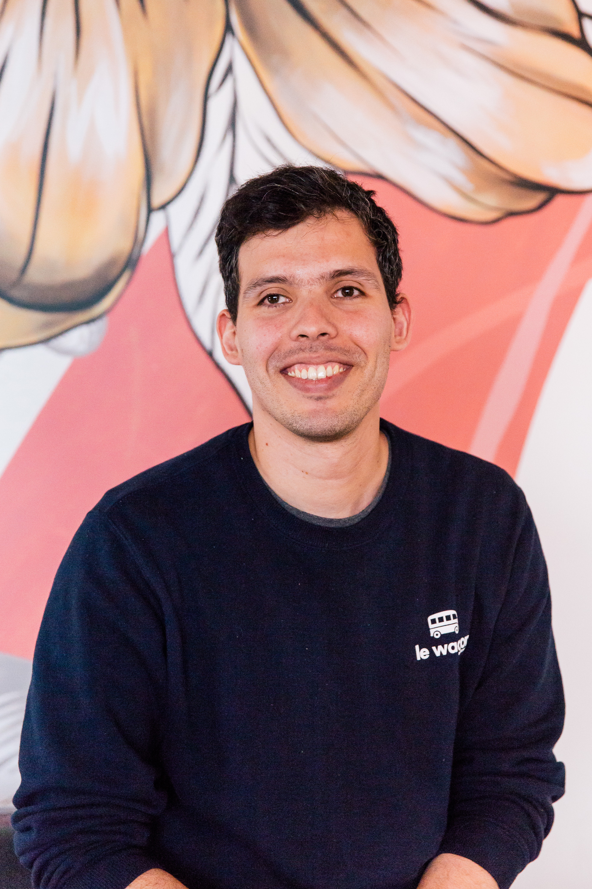

My tech projects
A selection of my range of work


F
This is who I am...
I am an enthusiastic Web Developer with an Industrial engineer background, with 4 years of experience as a Continuous Improvement Engineer in the healthcare industry. I have worked with a wide range of stakeholders from different backgrounds and areas of the business, collecting business requirements and suggesting proposals of improvement. I am an adaptive quick learner currently upskilling in Ruby on Rails. I deeply care about the integrity of my code, I am also dedicated to continuous learning and implementation of quality engineering practices and testing to achieve this standard.
Coomeva EPS manages the Colombian health services (similar to Medicare in Australia). Counts with more than 2 million members and has offices in 24 departments of the country.
Genfar S.A. is a company of the pharmaceutical sector which is dedicated to the manufacturing and production of medicines and products for human and animal health. Currently has subsidiaries in Ecuador and Peru and distributors throughout South and Central America.
Technical and soft skills
Ruby on Rails - HTML - CSS - JavaScript - Bootstrap - GIT - GitHub - SQL
Problem-solving - Critical thinking - Teamwork and collaboration - Time-management - Adaptability
A selection of my range of work